We hebben in de uitvoering van het TransparantieApp project veel geleerd, over de standaard logboek dataverwerkingen (core) en de extensie lezen daarop, over gebruikersonderzoek, UX design, business architectuur en implementatie architectuur. In de hoofdstuk noemen we onze belangrijkste bevindingen zodat daar door volgende projecten als ook de beheerder van de standaard op voortgebouwd kan worden.
- Zorg dat je bij overgang naar volgende organisatie in je eigen logging doorverwijst (core wijst alleen terug naar aanroepende organisatie)
- Maak batch bevragingen mogelijk (je wil op meerdere traceIDs, BSNs etc logging kunnen opvragen met 1 call)
- Maak paginatie mogelijk zodat je in een gebruikersinterfacewelke gebruik maakt van de API makkelijk resultaten kan weergeven
- Gebruik alleen een POST operatie voor het bevragen van de lezen API. Dataverwerkingen zijn vaak privacy gevoelig en gevoelige informatie wil je niet in Queries binnen een GET operatie gebruiken zoals aangeraden door de REST API designrules. Daarom is het uit privacy by design overwegingen beter om alleen de POST operatie toe te passen.
- Zorg voor een goede beveiliging van het lezen API endpoint, volg daarin de best practices van de module access-control van het kennisplatform APIs. Beveiliging is zeer domein specifiek daarom verplichten we in de standaard niet één specifieke methode.
- In de core-standaard wijst een log-regel terug naar de aanroepende organisatie. Echter, vanuit de raadpleging ligt de start bij de initiator-organisatie en wordt vandaaruit iedere opvolgende organisatie in de keten bevraagd. Dat betekent dat er behoefte is aan het logboek-id van de volgende organisatie in de keten. Het advies is dan ook om de Standaard uit te breiden met dit gegeven.
- maak mogelijk dat wanneer er wel een objectID maar geen subject ID is de subjectID niet veplicht is (bijvoorbeeld als een trace start met verwerkingen voordat er persoonsgegevens opgevraagd worden)
- maak mogelijk om te verwijzen naar een andere trace (voor bijvoorbeeld de totstandkoming van een grondslag) of om te verwijzen naar een document of web-pagina (beide via een URL) waarin meer informatie te vinden is. Een voorbeeld hiervan is het taxatieverslag in het geval van een OZB-aanslag.
- verruim het organisatorische werkingsgebied van de logging-Standaard en van de extensie lezen naar alle gebruikers van gegevens, die gebaseerd zijn op het BSN (zie de ALB: https://www.rvig.nl/autorisatielijst-bsn-gerechtigden). Dat betekent in elk geval uitbreiding naar pensioenfondsen, zorgverzekeraars en zorgverleners.
- Ontwerp de architectuur rondom de zwaarste usecase
Bij de usecase "Waarom is dit gebeurd?" is het startpunt bekend uit het besluit zelf; bij "Wie heeft er aan mijn gegevens gezeten?" is er geen startpunt en ligt het antwoord verspreid over potentieel duizenden Logboeken. Ontwerp voor die tweede usecase. Alle vraagstukken van de eerste doen zich daar immers ook voor, federatief bevragen, autorisatie per Logboek en het omgaan met onbereikbare Logboeken, aangevuld met het vinden van de relevante organisaties. Omgekeerd: een architectuur die uitgaat van een bekend startpunt is niet zonder herontwerp op te schalen naar een overheidsbrede zoekvraag.
- Data bij de bron
Waar een keten van organisaties betrokken is bij een besluit, is ieder van hen zelfstandig verwerkingsverantwoordelijke. De logging ligt daardoor per definitie verspreid vast. De architectuur houdt dat in stand: de inhoud van de traces blijft in het logboek van de Verantwoordelijke en er ontstaat geen centrale kopie (NFR-1). Dit uitgangspunt is goed verdedigbaar, maar het is niet zonder consequenties en moet daarom een bewuste keuze zijn. Decentrale opslag verplaatst complexiteit en vraagt om een aanvullende voorziening om de juiste logboeken te vinden.
- Voorzie een traceindex zodra overheidsbrede uitrol in beeld komt
Bij circa 1.600 overheidsorganisaties, elk met mogelijk meerdere logboeken, is het bij iedere vraag bevragen van alle Logboeken niet performant en is één onbereikbaar logboek eerder regel dan uitzondering. En, aanvullend, zonder index niet vast te stellen of die onbereikbare partij überhaupt iets over deze betrokkene te melden had. Het overzicht valt dan terug op een generieke disclaimer dat het overzicht mogelijk niet compleet is.
- Pseudonimiseer de traceindex, met een eigen pseudoniem per logboek
Een index die vastlegt welke organisatie gegevens over wie heeft verwerkt, is zelf privacygevoelig. Het enkele feit dat iemand in een bepaald logboek voorkomt kan al onthullend zijn; het verschil tussen contact met een gemeente en contact met een justitiële instelling is in dat opzicht groot. Laat de index daarom uitsluitend met pseudoniemen werken, zodat deze de identifier (BSN) op geen enkel moment ziet. De toegepaste algoritmes OPRF maken dat mogelijk. Sla bovendien niet één pseudoniem per betrokkene op, maar per logboek een eigen pseudoniem. Uit de index gegevens is dan niet af te leiden dat twee registraties onder verschillende logboeken bij dezelfde persoon horen.
- Beleg de pseudoniemendienst als gedeelde voorziening
De Pseudoniemendienst is in dit project niet nieuw ontwikkeld, maar overgenomen van van VWS. pseudonimisering is een generiek stelselvraagstuk dat niet ieder domein opnieuw hoeft op te lossen. Beleg de dienst als gedeelde voorziening, bijvoorbeeld bij Logius als onderdeel van DigiD.
- Standaardiseer de registers
De architectuur leunt op twee registers die zelf geen onderdeel van de standaard zijn: een register van Logboeken en een register van verwerkingsactiviteiten.
Vanuit een LDV wordt bovendien enkel een processing_activity_id opgeslagen per logregel. Beleg het register van verwerkingsactiviteiten daarom als onderdeel
van LDV of maak hier een separate standaard van.
- Kies voor een web-applicatie boven een native applicatie
Geef de voorkeur aan een web-applicatie boven een native applicaite. Daarmee sluit deze keuze aan bij een belangrijkste aanbeveling uit het gebruikersonderzoek: bied transparantie niet aan in een aparte app, maar in de context van bestaande dienstverlening. Richt de architectuur daarnaast zo in dat zij geen eisen stelt die enkel als web-applicatie of enkel als native applicatie haalbaar zijn (NFR-2).
Uit de gebruikerstesten blijkt dat transparantie niet alleen draait om het beschikbaar stellen van informatie, maar vooral om het wegnemen van onzekerheid en het ondersteunen van gebruikers bij het begrijpen van een situatie. Wanneer informatie ontbreekt of onduidelijk wordt weergegeven, kunnen gebruikers zelf verklaringen gaan zoeken voor deze onvolledigheid. Dit kan leiden tot speculatie en zelfs tot het vermoeden dat informatie bewust wordt achtergehouden. Hierdoor kan een toepassing die juist bedoeld is om transparantie te vergroten, onbedoeld wantrouwen versterken. Het is daarom belangrijk om ontbrekende informatie altijd te voorzien van een duidelijke verklaring, bijvoorbeeld door aan te geven dat een organisatie niet is aangesloten, dat er geen gegevensuitwisseling heeft plaatsgevonden of dat gegevens tijdelijk niet beschikbaar zijn.
Overweeg daarnaast om incomplete gegevens nog niet te tonen wanneer de betrouwbaarheid of betekenis ervan onvoldoende kan worden gewaarborgd. Voorkom daarbij dat de indruk ontstaat dat het overzicht volledig is. Maak zichtbaar welke organisaties wel en niet zijn aangesloten en verwijs waar nodig naar de betreffende organisatie.
Koppel transparantie aan handelingsperspectief. Wanneer gebruikers vragen of onduidelijkheden ervaren, willen zij weten wat zij vervolgens kunnen doen en bij welke organisatie zij terechtkunnen. Zorg daarom voor duidelijke vervolgstappen, zoals contactgegevens, links naar de verantwoordelijke organisatie of andere relevante acties.
Ondersteun verschillende mentale modellen en zoekstrategieën. Gebruikers zoeken op verschillende manieren naar informatie. Ondersteun daarom meerdere routes naar dezelfde informatie, bijvoorbeeld via organisatie, chronologie en directe zoekfunctionaliteit, in plaats van gebruikers één vaste navigatieroute op te leggen.
Bied de transparantiefunctie waar mogelijk in context aan binnen bestaande systemen. Gebruikers willen de functionaliteit bij voorkeur tegenkomen op de plek waar hun informatiebehoefte ontstaat, in plaats van hiervoor een aparte nieuwe applicatie of een nieuw digitaal loket te moeten vinden. Onderzoek daarom hoe de transparantiefunctie kan aansluiten op bestaande digitale omgevingen en gebruikersreizen. Zo hoeft de burger niet eerst een nieuwe toepassing te kennen en op te zoeken, maar wordt relevante transparantie aangeboden op het moment dat deze betekenis heeft.
Dit onderzoek laat zien dat de huidige standaard voornamelijk is ontwikkeld vanuit de technische mogelijkheden van logging, terwijl burgers vooral behoefte hebben aan inzicht in de totstandkoming van besluiten. Ook de literatuur van de Kafka Brigade laat zien dat burgers vastlopen doordat zij onvoldoende inzicht hebben in de samenhang tussen gegevens, regels en besluiten. Niet alleen de gebruikte gegevens, maar ook de toegepaste regels en de onderbouwing van een besluit moeten begrijpelijk en controleerbaar zijn.
Bij de ontwikkeling van toekomstige standaarden en applicaties voor burgers is het daarom aan te bevelen om uit te gaan van de problemen die burgers ervaren, en niet uitsluitend van de beschikbare technische mogelijkheden. Door de informatiebehoefte van burgers als uitgangspunt te nemen, kan beter worden bepaald welke informatie nodig is om betekenisvolle transparantie te bieden.
De huidige standaard maakt vooral inzichtelijk welke gegevens zijn gebruikt, maar biedt nog beperkt inzicht in hoe deze gegevens hebben bijgedragen aan een besluit. Een interessante richting voor verder onderzoek is daarom de toepassing van Rules as Code. Door logging te combineren met machineleesbare wet- en regelgeving kan worden onderzocht hoe toekomstige standaarden niet alleen inzicht kunnen bieden in de gebruikte gegevens, maar ook in de toegepaste regels en de onderbouwing van besluiten. Hiermee kunnen standaarden beter aansluiten op de informatiebehoefte van burgers en bijdragen aan uitlegbare en transparante overheidsdienstverlening. De volgende methodieken en handvaten zijn gebruikt tijdens dit onderzoek om de standaard nader te onderzoeken:
- Maak abstracte concepten concreet met prototypes
Transparantie, logging en gegevensuitwisseling zijn voor veel burgers abstracte begrippen. Het gebruik van interactieve prototypes helpt deelnemers om zich een concreet beeld te vormen van de oplossing, waardoor betrouwbaardere feedback ontstaat.
- Onderzoek mentale modellen in plaats van alleen usability
Bij nieuwe concepten is het niet alleen belangrijk of gebruikers een interface kunnen bedienen, maar vooral of zij begrijpen wat er gebeurt. Onderzoek zou daarom expliciet moeten kijken naar hoe burgers denken dat gegevensverwerking en besluitvorming werken.
- Gebruik realistische casussen met een daadwerkelijke stakeholder.
Onderwerpen zoals het zorgdomein bleek geschikt om abstracte vraagstukken rondom transparantie begrijpelijk te maken. Het gebruik van herkenbare situaties vergroot de kwaliteit van de feedback en het realitische laten aansluiten van de standaard.
- Betrek verschillende doelgroepen
Het onderzoek laat zien dat actieve inzagezoekers, pragmatische burgers en kwetsbare gebruikers verschillende behoeften hebben. Het is daarom belangrijk om niet uitsluitend digitaal vaardige gebruikers te onderzoeken.
- Combineer meerdere onderzoeksmethoden
De combinatie van interviews, literatuuronderzoek, usabilitytesten, co-creatie en design research leverde meer inzicht op dan één enkele methode. Verschillende methoden vullen elkaar aan en helpen om zowel behoeften als gedrag beter te begrijpen.
- Onderzoek de behoefte aan de "waarom-vraag"
Gebruikers blijken niet alleen geïnteresseerd in welke gegevens zijn gebruikt, maar vooral in hoe deze hebben bijgedragen aan een besluit. Dit vormt een interessante onderzoekslijn voor toekomstige ontwikkeling van zowel de standaard als de applicatie. Leer hiervoor ook sectie 5.1.
- Hanteer een iteratieve aanpak
Inzichten ontstaan door meerdere cycli van ontwerpen, testen en verbeteren. Gebruikersonderzoek moet daarom geen eindcontrole zijn, maar een doorlopend onderdeel van het ontwerpproces.
Naast gebruikers onderzoek zijn er ook meerdere design gemaakt. Tijdens de design sprints zijn er bepaalde design principes gebruikt. De volgende blijken nuttig en relevant voor het ontwerpen van UI voor data logging visualisatie:
maak geen nieuwe app maar biedt transparantie aan in context, bij een brief van de overheid of op mijnoverheid.nl bijvoorbeeld
Hanteer een mobile-first ontwerpstrategie
Gebruikers zijn gewend om overheidsdiensten steeds vaker via mobiele apparaten te gebruiken. Daarnaast dwingt een mobile-first benadering ontwerpers om kritisch te kijken naar welke informatie daadwerkelijk noodzakelijk is. Door eerst voor kleine schermen te ontwerpen ontstaat een compactere en beter geprioriteerde informatiearchitectuur, waardoor de kans op informatie-overload afneemt.
- Gebruik een persona-matrix voor informatieprioritering
Uit het onderzoek blijkt dat verschillende gebruikersgroepen uiteenlopende informatiebehoeften hebben. Het wordt aanbevolen om een persona-matrix te gebruiken waarin per doelgroep wordt vastgelegd welke informatie belangrijk is en wanneer deze relevant wordt. Deze matrix kan vervolgens worden gebruikt om informatie te prioriteren en te bepalen welke informatie prominent zichtbaar moet zijn en welke informatie optioneel beschikbaar wordt gemaakt.
- Ontwerp eerst de gebruikersflow en daarna de interfacecomponenten
Bij complexe transparantievraagstukken is het belangrijk om eerst inzicht te krijgen in de gebruikersreis voordat individuele schermen of componenten worden ontworpen. Het wordt aanbevolen om eerst de flow van taken, beslissingen en informatiebehoeften uit te werken en pas daarna componenten op detailniveau te ontwerpen. Hierdoor blijft de focus liggen op het oplossen van gebruikersproblemen in plaats van op afzonderlijke interface-elementen.
- Gebruik begrijpelijke en mensgerichte taal
Technische, juridische en organisatorische terminologie vormt een belangrijke drempel voor burgers. Het ontwerp dient daarom gebruik te maken van begrijpelijke taal die aansluit bij het dagelijkse taalgebruik van gebruikers. Complexe begrippen kunnen waar nodig worden voorzien van aanvullende uitleg, zodat informatie toegankelijk blijft voor een brede doelgroep.
- Ondersteun snelle informatievinding met zoeken en filteren
Gebruikers bezoeken een transparantievoorziening vaak met een specifieke vraag of informatiebehoefte. Het wordt daarom aanbevolen om zoek- en filtermogelijkheden aan te bieden waarmee gebruikers snel relevante gebeurtenissen, gegevensverwerkingen of besluiten kunnen vinden. Dit helpt gebruikers om sneller antwoord te krijgen op hun vragen en vermindert de complexiteit van grote dossiers.
- Ontwerp voor stressvolle gebruikssituaties
De behoefte aan transparantie ontstaat vaak wanneer burgers worden geconfronteerd met een onverwacht of negatief besluit. In dergelijke situaties is de cognitieve belasting hoog en is er behoefte aan snelle duidelijkheid. Het ontwerp dient daarom prioriteit te geven aan overzicht, eenvoud en directe beantwoording van vragen zoals: wat is er gebeurd, waarom is dit gebeurd en wat kan ik nu doen?
- Beperk informatie-overload in navigatie-elementen
Bij complexe dossiers kunnen navigatiepaden snel omvangrijk worden. Het wordt aanbevolen om breadcrumbs compact te houden en standaard alleen de meest bovenligenste van de navigatiestructuur te tonen. Hierdoor behouden gebruikers context zonder dat de interface onnodig veel ruimte inneemt of extra cognitieve belasting veroorzaakt.
- Bied transparantie gelaagd aan
Niet iedere gebruiker heeft behoefte aan dezelfde hoeveelheid detail. Daarom wordt aanbevolen om informatie gelaagd aan te bieden, waarbij gebruikers eerst een overzicht op hoofdlijnen krijgen en vervolgens kunnen doorklikken naar meer detail. Deze aanpak ondersteunt zowel gebruikers die snel antwoord willen als gebruikers die behoefte hebben aan diepgaand inzicht in gegevensverwerkingen en besluitvorming.
Gelaagdheid dient niet alleen terug te komen in de inhoud van de informatie, maar ook in de interactie en componenten van de gebruikersinterface. Het wordt aanbevolen om gebruikers stapsgewijs door informatie te laten navigeren via afzonderlijke schermen of detailweergaven. Hierdoor ontstaat een duidelijke gebruikersreis waarin gebruikers beter begrijpen waar zij zich bevinden en welke informatie beschikbaar is.
Idealiter is de interactie "klikken" of "tappen". Deze aanpak draagt daarnaast bij aan de toegankelijkheid van de applicatie. Een duidelijke schermstructuur en navigatie zijn voor gebruikers van screenreaders vaak eenvoudiger te volgen dan grote hoeveelheden dynamisch open- en dichtklappende content. Door informatie op meerdere niveaus aan te bieden blijft de interface overzichtelijk, toegankelijk en beter beheersbaar voor een brede groep gebruikers.
- Structureer informatie rondom de informatiebehoefte van gebruikers
Er bestaan verschillende manieren om complexe gegevensverwerkingen, relaties en besluitvorming visueel weer te geven. Hoewel dergelijke visualisaties waardevol kunnen zijn voor uitgebreide visualisaties voor veel burgers, en met name oudere gebruikers, moeilijk te interpreteren zijn of the navigeren.
Daarom wordt aanbevolen om niet de beschikbare data of techniek als uitgangspunt te nemen, maar de informatiebehoefte van de gebruiker (de job to be done). Per gebruikssituatie dient te worden onderzocht welke informatie gebruikers daadwerkelijk zoeken en welke informatie hen helpt om hun vraag te beantwoorden.
Uit het onderzoek blijkt dat gebruikers vooral behoefte hebben aan drie kernvragen om een eerste overzicht te krijgen van hun data:
- Welke organisaties waren betrokken?
Gebruikers willen kunnen zien welke organisaties gegevens met elkaar hebben uitgewisseld of verwerkt.
- Wanneer gebeurde dit?
De datum en volgorde van gebeurtenissen vormen een belangrijk herkenningspunt voor gebruikers en helpen bij het reconstrueren van een proces.
- Welke gegevens zijn gebruikt?
Gebruikers willen inzicht krijgen in welke persoonsgegevens of gegevenscategorieën een rol hebben gespeeld binnen een proces of besluit.
Deze informatie vormt voor veel gebruikers het primaire startpunt voor begrip en herkenning. Meer geavanceerde visualisaties en aanvullende details kunnen vervolgens als verdiepende laag worden aangeboden voor gebruikers die behoefte hebben aan meer context.
- Bied transparantie aan in de context van bestaande dienstverlening
Uit het onderzoek blijkt dat burgers hun interactie met de overheid ervaren als één doorlopende klantreis, terwijl informatie in de praktijk vaak verspreid is over verschillende systemen en applicaties. Het introduceren van een afzonderlijke transparantie-app kan ertoe leiden dat gebruikers opnieuw moeten zoeken naar informatie en moeten schakelen tussen verschillende omgevingen.
Daarom wordt aanbevolen om transparantie zoveel mogelijk aan te bieden binnen de context waarin burgers deze informatie nodig hebben. Bijvoorbeeld bij een besluitbrief, binnen een dossier op MijnOverheid of als onderdeel van bestaande overheidsdiensten. Op deze manier ontstaat transparantie op het moment dat gebruikers vragen hebben over een besluit of gebeurtenis.
Deze benadering sluit aan bij het principe dat niet de burger hoeft te reizen tussen systemen, maar dat de informatie naar de burger wordt gebracht. Hierdoor wordt de drempel om transparantie-informatie te raadplegen lager en neemt de kans toe dat de informatie daadwerkelijk wordt gebruikt.
- Gebruik samenvattingen om informatie scanbaar en begrijpelijk te maken
Transparantie-informatie kan snel omvangrijk en complex worden. Gebruikers hebben echter vaak eerst behoefte aan een korte samenvatting voordat zij zich verdiepen in de onderliggende details. Het wordt daarom aanbevolen om gegevensverwerkingen, gebeurtenissen en besluiten te voorzien van begrijpelijke samenvattingen die in één oogopslag duidelijk maken wat er is gebeurd.
Deze samenvattingen kunnen bijvoorbeeld bestaan uit een korte beschrijving van de gebeurtenis, de betrokken organisatie, de gebruikte gegevens en de datum waarop de gebeurtenis heeft plaatsgevonden. Hierdoor kunnen gebruikers snel door een dossier navigeren en bepalen welke onderdelen voor hen relevant zijn.
Hoewel complexe visualisaties waardevol kunnen zijn voor sommige gebruikers, blijkt uit het onderzoek dat deze niet altijd bijdragen aan begrip. In veel situaties kunnen goed ontworpen samenvattingen dezelfde informatie effectiever overbrengen dan uitgebreide diagrammen of procesvisualisaties. Samenvattingen kunnen daardoor niet alleen dienen als introductie op meer detail, maar in sommige gevallen ook als volwaardig alternatief voor complexere visualisaties.
Door informatie eerst op samenvattingsniveau aan te bieden en details pas daarna beschikbaar te maken, wordt de scanbaarheid verbeterd en neemt de cognitieve belasting af. Dit is met name belangrijk voor mobiele gebruikers, ouderen en gebruikers die een specifiek antwoord zoeken binnen een groter dossier.
- Sluit aan bij bestaande mentale modellen en interactiepatronen
Volgens Jakob's Law besteden gebruikers het grootste deel van hun tijd aan andere websites en applicaties. Hierdoor verwachten zij dat nieuwe systemen vergelijkbare patronen, navigatiestructuren en interacties gebruiken als systemen die zij al kennen.
Voor transparantievoorzieningen betekent dit dat gebruikers niet geholpen zijn met volledig nieuwe interactiemodellen of een aparte manier van navigeren door gegevens. Het wordt aanbevolen om aan te sluiten bij bestaande patronen die men veel gebruikt. Door aan te sluiten bij bestaande mentale modellen wordt de leercurve beperkt en kunnen gebruikers zich richten op het beantwoorden van hun vraag in plaats van op het leren gebruiken van een nieuw systeem.
Het beleidsjuridischkader heeft alleen betrekking op de extensie lezen, dus niet op het gebruikersonderzoek UX design of de architectuur. Hieronder zijn een aantal uitgangspunten en principes benoemd. Voordat organisaties de leesextensie gaan implementeren, wordt aanbevolen om hier in de organisatie zelf naar te kijken.
Gegevens worden vastgelegd en uitleesbaar gemaakt
Overheidsorganisaties die gebruik maken van de standaard Logboek dataverwerkingen inclusief de leesextensie om de verwerking van data gestandaardiseerd zichtbaar te maken, zijn zelf verantwoordelijk voor implementatie en inrichting van de standaard, de logs en de informatie die erin te vinden is.
Dataverwerkingen worden waar mogelijk gemakkelijk inzichtelijk gemaakt. Overheidsorganisaties maken een afweging over welke gegevens proactief inzichtelijk gemaakt kunnen worden en welke niet. Een organisatie kan daarmee ook bepalen welke informatieverzoeken in de regel worden toegekend en kijk of deze informatie al proactief open kan worden gezet, al dan niet afgeschermd door authenticatie. Het is uiteindelijk aan de overheidsorganisatiezelf om te beoordelen welke informatie al vooraf inzichtelijk gemaakt wordt en welke naar aanleiding van een informatieverzoek (zoals de AVG of Woo) getoond wordt. Deze vorm van proactieve beschikbaar maken van informatie moet worden onderscheiden van formele verzoekprocedures en vormt geen recht in de zin van artikel 15 AVG of de Woo, maar kan deze mogelijk wel ondersteunen.
Bij het tonen van informatie moet de organisatie rekening houden met zwaarder wegende algemene belangen (bijv. nationale/openbare veiligheid, opsporing van strafbare feiten) of zwaarder wegende belangen van betrokkene of rechten van anderen (bijv. bescherming persoon) waardoor bepaalde informatieverplichtingen niet gelden. Dit kan bijvoorbeeld door bij een verwerkingsactiviteit een vertrouwelijke en niet-vertrouwelijke variant op te nemen, waardoor het vanuit de logfile inzichtelijk of er bij de betreffende verwerking rekening moet worden gehouden met zwaarder wegende belangen.
De organisatie borgt dat de Leesextensie optimaal ingericht wordt ten behoeve van ondersteuning van het versterken van de informatiepositie van de burger, door proactief en waar mogelijk, de informatie die zij heeft geautomatiseerd te verschaffen.
Naleving en vertrouwen
De Leesextensie dient zodanig ingericht te worden dat deze voldoet aan de vereisten die volgen uit regels ten aanzien van informatieveiligheid. De organisatie bepaalt vooraf de procedurele, procesmatige en technische waarborgen die nodig zijn om ervoor te zorgen dat de uitleesbaar gemaakte gegevens niet oneigenlijk worden gebruikt of misbruikt.
Organisaties moeten erop kunnen vertrouwen dat informatie niet onjuist wordt gebruikt of wordt misbruikt:
a. De organisatie zorgt ervoor dat de beoogde toegang tot gegevens en de juiste werking van zijn systemen continu alsook achteraf te controleren is.
b. De organisatie verschaft alleen geautoriseerde afnemers toegang tot vertrouwelijke gegevens.
c. De organisatie zorgt ervoor dat de beoogde toegang tot gegevens en de juiste werking van zijn systemen continu alsook achteraf te controleren is.
Bij gerede twijfel aan de juistheid van informatie meldt de organisatie dit aan de verantwoordelijke bronhouder. De informatie zal daar waar het is opgeslagen moeten worden gecorrigeerd.
Bij het inzichtelijk maken van een dataverwerking, dient een tijdsstempel opgenomen worden die aangeeft de gegevenswaarde wordt getoond zoals die gold ten tijde van de verwerking; ook als deze bijvoorbeeld na enkele maanden opnieuw wordt ingezien of verstrekt.
Om inzicht te krijgen in de gebruikerservaring rondom de verwerking en uitwisseling van persoonsgegevens zijn persona's, een mental model en een experience map opgesteld. De persona's beschrijven representatieve gebruikers met verschillende doelen, behoeften en contexten en helpen om ontwerpkeuzes vanuit het perspectief van de gebruiker te maken. Het mental model brengt de verwachtingen, aannames en overtuigingen van deze gebruikers over gegevensverwerking in kaart. De experience map laat vervolgens zien hoe deze verwachtingen zich vertalen naar de feitelijke gebruikerservaring: van verwachting en onzichtbare verwerking tot verstoring, begrip, handelen en vertrouwen. In tegenstelling tot een customer journey, die de interactie binnen een specifieke casus of dienstverlening beschrijft, biedt de experience map een overkoepelend beeld van de gebruikerservaring over verschillende organisaties en situaties heen. Samen vormen deze UX-methoden de basis voor het identificeren van behoeften, risico's en ontwerpkansen.
Uit het gebruikersonderzoek blijkt dat burgers niet direct op zoek zijn naar gedetailleerde informatie over gegevensverwerkingen, besluitvorming of logging. Voordat gebruikers een proces proberen te begrijpen, zoeken zij eerst naar herkenningspunten die bevestigen dat de informatie betrekking heeft op hun situatie.
Deze herkenningspunten bestaan voornamelijk uit betrokken organisaties, datums, gebeurtenissen en gebruikte gegevens. Wanneer gebruikers deze elementen herkennen, ontstaat voldoende context om zich verder te verdiepen in het proces en de achterliggende besluitvorming.
Op basis van de onderzoeksresultaten wordt het volgende conceptuele model voorgesteld:
Herkenning → Context → Verklaring → Begrip → Vertrouwen
Binnen dit model vormt herkenning de eerste stap. Gebruikers zoeken eerst bevestiging dat informatie relevant is voor hun situatie. Vervolgens proberen zij de context van gebeurtenissen te begrijpen, waarna behoefte ontstaat aan een verklaring van waarom bepaalde handelingen of besluiten hebben plaatsgevonden. Wanneer deze informatie begrijpelijk wordt gepresenteerd, ontstaat meer inzicht in het proces en uiteindelijk meer vertrouwen in de uitkomst.
Dit model suggereert dat transparantievoorzieningen niet zouden moeten beginnen met technische details of complexe visualisaties, maar met informatie die gebruikers direct kunnen relateren aan hun eigen situatie. Herkenning vormt daarmee de basis voor verdere verdieping.
Het model kan tevens worden vertaald naar verschillende informatieniveaus binnen de gebruikersinterface:
| Niveau |
Doel gebruiker |
Voorbeelden van componenten |
| Herkenning |
"Gaat dit over mij?" |
Organisatienaam, datum, gebeurtenis, gebruikte gegevens |
| Context |
"Wat is er gebeurd?" |
Tijdlijn, dossier, relatie tussen gebeurtenissen |
| Verklaring |
"Waarom gebeurde dit?" |
Samenvatting, besluituitleg, oorzaak-gevolgrelaties |
| Begrip & vertrouwen |
"Kan ik dit begrijpen en controleren?" |
Broninformatie, logging, auditinformatie |
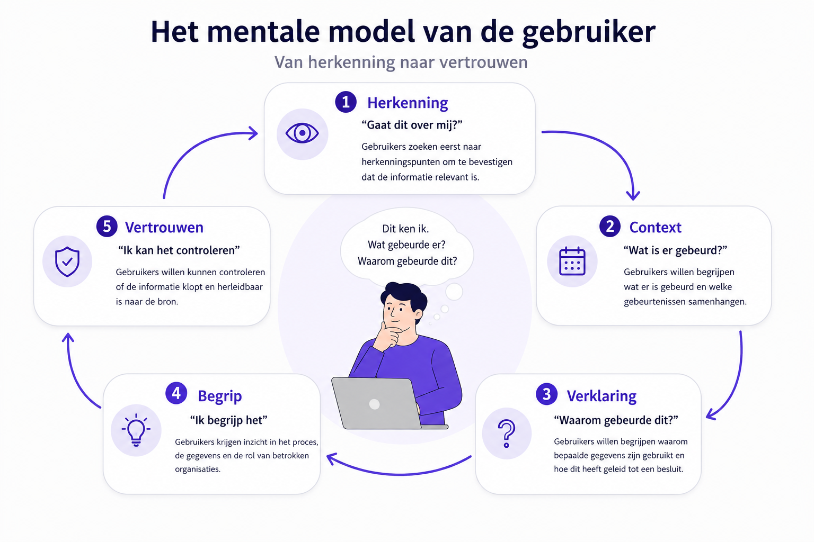
Beschrijving infographic
Infographic met de titel "Het mentale model van de gebruiker – Van herkenning naar vertrouwen". In het midden staat een persoon achter een laptop. Boven de persoon staat een tekstballon met de vragen: "Dit ken ik. Wat gebeurde er? Waarom gebeurde dit?". Rondom de persoon staan vijf stappen die met pijlen in een cirkel met elkaar verbonden zijn.
Herkenning – "Gaat dit over mij?"
Gebruikers zoeken eerst naar herkenningspunten om vast te stellen dat de informatie betrekking heeft op hun situatie. Voorbeelden zijn een bekende organisatie, een datum, een gebeurtenis of gebruikte gegevens.
Context – "Wat is er gebeurd?"
Gebruikers willen begrijpen welke gebeurtenissen hebben plaatsgevonden en hoe deze met elkaar samenhangen.
Verklaring – "Waarom gebeurde dit?"
Gebruikers willen weten waarom bepaalde gegevens zijn gebruikt en hoe deze hebben bijgedragen aan een besluit of gebeurtenis.
Begrip – "Ik begrijp het"
Gebruikers krijgen inzicht in het proces, de gebruikte gegevens en de rol van betrokken organisaties.
Vertrouwen – "Ik kan het controleren"
Gebruikers willen kunnen controleren of de informatie correct is en herleidbaar is naar de bron.
De pijlen tussen de stappen tonen een oplopend proces van informatieverwerking. Het model laat zien dat gebruikers eerst behoefte hebben aan herkenning voordat zij context, verklaringen en begrip zoeken. Vertrouwen ontstaat pas nadat gebruikers voldoende inzicht hebben gekregen in wat er is gebeurd en waarom.
Deze experience map beschrijft hoe mensen de verwerking en uitwisseling van persoonsgegevens ervaren gedurende hun interactie met organisaties. De kaart laat zien dat gegevensverwerking in de meeste situaties onzichtbaar en probleemloos verloopt. Pas wanneer er iets onverwachts gebeurt, ontstaat de behoefte aan inzicht, uitleg en handelingsperspectief.
De experience map bestaat uit twee delen. Het eerste deel beschrijft de normale gebruikerservaring: van een verwachting waarmee iemand een proces start, via de onzichtbare verwerking van gegevens, naar een voorspelbaar resultaat. Het tweede deel richt zich op de situatie waarin deze verwachting wordt doorbroken. De gebruiker ervaart een verstoring, zoekt naar een verklaring, wil begrijpen wat er is gebeurd en zoekt mogelijkheden om invloed uit te oefenen. Uiteindelijk kan opnieuw vertrouwen ontstaan wanneer voldoende transparantie, context en handelingsperspectief worden geboden.
Onder iedere experience map staat een ontwerpanalyse. Deze analyse vertaalt de observaties uit de gebruikerservaring naar ontwerpinzichten. Per fase worden de onderliggende behoeften, risico's en ontwerpkansen benoemd. Deze inzichten vormen het uitgangspunt voor het ontwerpen van interventies, interfaces en dienstverlening die transparantie vergroten, gebruikers meer regie geven en het vertrouwen in gegevensverwerking versterken.
| Fase |
1. Verwachting |
2. Verwerking |
3. Normaal verloop |
| Wat gebeurt er? |
Persoon wil iets bereiken |
Organisaties verwerken gegevens |
Alles verloopt zoals verwacht |
| Gebruikersdoel |
Taak afronden |
Geen actief doel |
Resultaat ontvangen |
| Gedachten |
"Dit zal wel geregeld worden." |
"Dat gebeurt automatisch." |
"Prima." |
| Emoties |
Vertrouwend |
Onbezorgd |
Tevreden |
| Vragen |
Wat moet ik doen? |
Geen |
Geen |
| Analyse |
1. Verwachting |
2. Verwerking |
3. Normaal verloop |
| Behoefte |
Gemak |
Vertrouwen |
Voorspelbaarheid |
| Risico |
Complexiteit |
Onzichtbaarheid |
Onverschilligheid |
| Kans |
Duidelijke start |
Transparante processen |
Frictieloze ervaring |
Gegevensverwerking verloopt voor burgers veelal op de achtergrond. Zolang de uitkomst overeenkomt met hun verwachting, bestaat er doorgaans weinig behoefte om het onderliggende proces te onderzoeken. De behoefte aan transparantie wordt vooral relevant wanneer die verwachting wordt doorbroken: er ontbreekt bijvoorbeeld informatie, een uitkomst is onverwacht of iemand wil weten waarom gegevens zijn uitgewisseld.
Op zo'n moment probeert de gebruiker eerst te begrijpen wat er is gebeurd en waarom. De laatste gebruikerstesten laten daarbij zien dat transparantie ook een risico kent: wanneer informatie ontbreekt of onvoldoende wordt verklaard, kan de gebruiker zelf verklaringen gaan vormen. In plaats van onzekerheid weg te nemen, kan transparantie dan juist nieuwe onzekerheid of wantrouwen veroorzaken.
Daarom is het belangrijk om niet alleen te laten zien wat bekend is, maar ook transparant te zijn over wat niet bekend of beschikbaar is en waarom. Maak bijvoorbeeld duidelijk of een organisatie niet is aangesloten, er geen gegevensuitwisseling heeft plaatsgevonden of gegevens tijdelijk niet beschikbaar zijn. Wanneer incomplete gegevens onvoldoende betrouwbaar of begrijpelijk kunnen worden aangeboden, kan worden overwogen deze nog niet te tonen en de gebruiker in plaats daarvan naar de betreffende organisatie te verwijzen.
Ook moet transparantie leiden tot handelingsperspectief. Wanneer een gebruiker iets niet begrijpt of een mogelijke fout ontdekt, moet in dezelfde context duidelijk worden welke vervolgstappen mogelijk zijn en bij welke organisatie de gebruiker terechtkan.
Daarbij hoeft transparantie niet noodzakelijk als een afzonderlijke gebruikersreis of nieuwe applicatie te worden aangeboden. Gebruikers willen de transparantiefunctie ook kunnen vinden binnen de context van bestaande systemen en diensten. De behoefte aan transparantie ontstaat immers vaak tijdens een andere taak of naar aanleiding van een specifieke gebeurtenis. Door de functie aan te bieden op het moment en de plek waar deze behoefte ontstaat, hoeft de burger niet eerst een afzonderlijke TransparantieApp te kennen en op te zoeken.
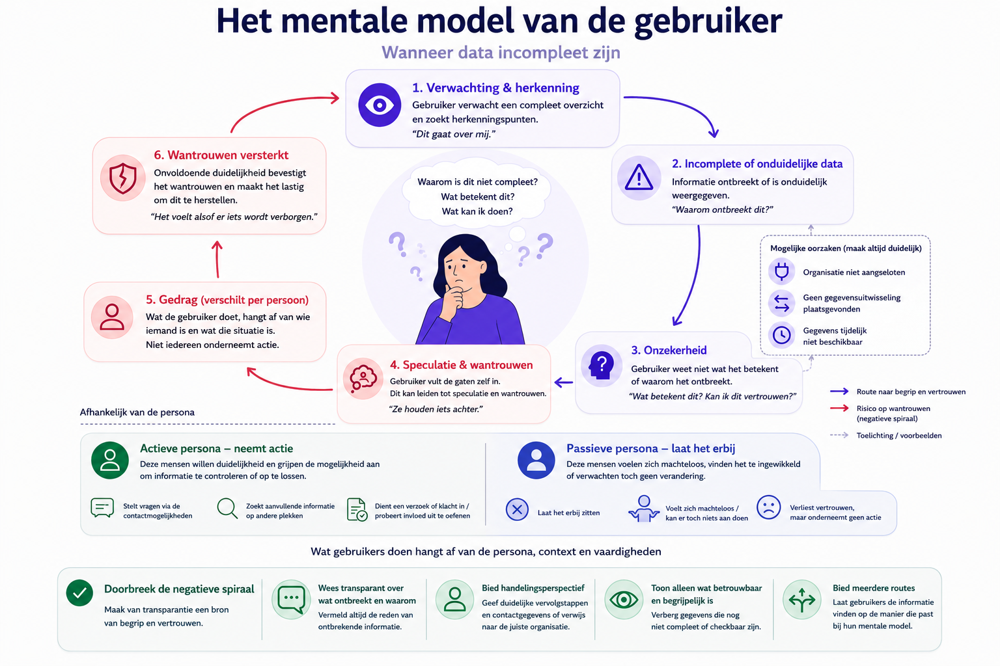
| Fase |
4. Verstoring |
5. Begrijpen |
6. Handelen |
7. Vertrouwen |
| Wat gebeurt er? |
Iets wijkt af van de verwachting |
Persoon zoekt context en verklaring |
Persoon wil controleren of invloed uitoefenen |
Er ontstaat opnieuw zekerheid |
| Gebruikersdoel |
Begrijpen wat er gebeurt |
Achterhalen wat, waarom en door wie |
Weten wat mogelijk is en bij wie men terechtkan |
Kunnen vertrouwen op het geboden inzicht |
| Gedachten |
"Waarom gebeurt dit?" |
"Hoe zit dit precies en is dit overzicht compleet?" |
"Wat kan ik nu doen?" |
"Ik begrijp het en weet wat mijn opties zijn." |
| Behoefte |
Verklaring |
Context, volledigheid en begrijpelijkheid |
Handelingsperspectief |
Zekerheid |
| Risico |
Verwarring |
Speculatie en informatie-overload |
Machteloosheid |
Wantrouwen |
| Ontwerpkans |
Geef tijdig inzicht |
Verklaar ook ontbrekende informatie |
Bied acties in context aan |
Maak informatie controleerbaar en betrouwbaar |
| Analyse |
1. Verwachting |
2. Verwerking |
3. Normaal verloop |
| Behoefte |
Gemak en herkenning |
Vertrouwen |
Voorspelbaarheid en zekerheid |
| Risico |
Complexiteit of onduidelijkheid |
Onzichtbaarheid en onvolledigheid |
Schijn van volledigheid |
| Kans |
Duidelijke en herkenbare start |
Transparant maken wat er gebeurt én wat ontbreekt |
Betrouwbare, frictieloze ervaring |
De onderstaande persona's zijn opgesteld op basis van een vragenlijstonderzoek onder potentiële gebruikers van de TransparantieApp. In deze vragenlijst is deelnemers gevraagd om het belang van verschillende transparantiefuncties te beoordelen op een Likert-schaal van 1 tot 7, waarbij:
- 1 = Helemaal niet belangrijk
- 7 = Zeer belangrijk
De gemiddelde scores zijn gebruikt om patronen in informatiebehoeften en voorkeuren te identificeren. Op basis van deze patronen zijn drie persona's opgesteld die verschillende houdingen ten opzichte van datatransparantie vertegenwoordigen. De persona's zijn daarmee geen beschrijving van individuele respondenten, maar archetypen die zijn afgeleid uit de verzamelde onderzoeksgegevens.
De persona's helpen om verschillen in informatiebehoefte, gewenste mate van controle en behoefte aan detail inzichtelijk te maken. Zij vormen een hulpmiddel bij het ontwerpen en prioriteren van functionaliteiten binnen de TransparantieApp.
Fatima is sterk geïnteresseerd in wat er met haar persoonsgegevens gebeurt. Ze maakt zich zorgen over hoe organisaties haar gegevens gebruiken en wil daarom vooral inzicht en controle.
Uit de analyse blijkt dat voor Fatima vooral functies belangrijk zijn die haar direct laten zien wie toegang heeft tot haar gegevens (gemiddelde score 6,89) en met welke organisaties haar gegevens zijn gedeeld (gemiddelde score 6,89). Deze hoge scores laten zien dat transparantie over datatoegang en datadeling voor haar essentieel is.
Daarnaast vindt Fatima het zeer belangrijk dat zij haar gegevens kan controleren en corrigeren wanneer deze niet kloppen. De mogelijkheid om actie te ondernemen wanneer gegevens onjuist zijn, bijvoorbeeld door correctie of bezwaar, krijgt een gemiddelde score van 6,89. Dit geeft aan dat controle over persoonlijke data voor haar een kernfunctie is.
Fatima is ook geïnteresseerd in meer inhoudelijke uitleg over datagebruik. Zo vindt zij het belangrijk om te begrijpen waarom haar gegevens worden gebruikt (gemiddelde score 6,67) en of haar gegevens invloed hebben gehad op een besluit (gemiddelde score 6,56). Transparantie gaat voor haar dus niet alleen over toegang tot data, maar ook over het begrijpen hoe beslissingen tot stand komen.
Meer technische functies, zoals het zien welke verwerkingen op haar gegevens zijn uitgevoerd (gemiddelde score 6,33) of een volledig overzicht van de route die haar gegevens door organisaties hebben afgelegd (gemiddelde score 5,78), zijn voor Fatima iets minder belangrijk.
Voor Fatima staat een transparantievoorziening vooral in het teken van begrijpen, controleren en kunnen handelen wanneer dat nodig is.
Marc is geïnteresseerd in hoe zijn gegevens worden gebruikt, maar wil het vooral overzichtelijk en praktisch houden.
Hij vindt het belangrijk om te kunnen zien welke organisaties toegang hebben tot zijn gegevens (gemiddelde score 6,7) en met wie deze gegevens zijn gedeeld (gemiddelde score 6,6). Dit geeft hem een gevoel van controle zonder dat hij zich hoeft te verdiepen in complexe details.
Ook vindt Marc het belangrijk dat hij zijn gegevens kan controleren op juistheid (gemiddelde score 6,5) en dat hij actie kan ondernemen wanneer gegevens niet kloppen (gemiddelde score 6,9). Deze hoge score laat zien dat ook voor hem het kunnen corrigeren van gegevens een belangrijke functie is.
Hoewel Marc transparantie waardeert, wil hij niet te diep in technische details duiken. Functies zoals inzicht in welke verwerkingen op zijn gegevens zijn uitgevoerd (gemiddelde score 5,8) of een volledig overzicht van de route die gegevens tussen organisaties afleggen (gemiddelde score 6,0) zijn voor hem minder belangrijk dan een duidelijk en eenvoudig overzicht.
Voor Marc betekent transparantie vooral dat hij snel kan controleren of alles klopt en eenvoudig kan ingrijpen als dat nodig is, zonder zich te hoeven verdiepen in technische details.
Peter denkt in het dagelijks leven nauwelijks na over zijn persoonsgegevens. Digitale diensten gebruikt hij vooral omdat ze handig zijn en hij staat zelden stil bij hoe zijn gegevens worden verwerkt. Toch vindt hij het belangrijk dat hij kan ingrijpen wanneer er iets misgaat.
Ook bij deze persona blijkt uit de data dat de mogelijkheid om actie te ondernemen bij onjuiste gegevens belangrijk is (gemiddelde score 6,36). Daarnaast vindt hij het belangrijk om te kunnen zien welke organisaties toegang hebben tot zijn gegevens (gemiddelde score 6,36) en met welke organisaties gegevens zijn gedeeld (gemiddelde score 6,18).
Meer complexe functies, zoals inzicht in welke verwerkingen op gegevens zijn uitgevoerd (gemiddelde score 4,9) of een volledig overzicht van de route die gegevens tussen organisaties afleggen (gemiddelde score 4,7), zijn voor hem duidelijk minder belangrijk. Deze informatie voelt voor hem vaak te technisch of te uitgebreid.
Voor Peter is een transparantievoorziening vooral waardevol wanneer deze eenvoudig, duidelijk en probleemgericht is. Hij wil vooral weten dat hij geholpen wordt wanneer er iets misgaat, zonder actief op zoek te hoeven naar uitgebreide informatie.
Let op: Deze persona is niet direct gebaseerd op de uitgevoerde vragenlijst of gebruikerstesten. De persona is opgesteld op basis van inzichten uit literatuuronderzoek, toegankelijkheidsrichtlijnen en algemene ontwerpprincipes rondom inclusieve digitale dienstverlening.
Els heeft beperkte digitale vaardigheden en vindt het moeilijk om te begrijpen hoe haar gegevens worden gebruikt. Zij is sterk afhankelijk van overheidsorganisaties en digitale systemen, maar heeft vaak onvoldoende kennis of vertrouwen om complexe informatie zelfstandig te interpreteren.
Els heeft behoefte aan eenvoudige uitleg, duidelijke taal en stapsgewijze begeleiding. Wanneer informatie te uitgebreid, technisch of abstract wordt gepresenteerd, verliest zij het overzicht. Voor haar is het belangrijk dat informatie bevestigt dat alles correct verloopt en dat duidelijk wordt aangegeven wat zij moet doen wanneer er iets misgaat.
In tegenstelling tot de andere persona's heeft Els weinig behoefte aan diepgaande analyses van gegevensverwerkingen of besluitvorming. Zij wil vooral weten dat processen correct verlopen en dat zij ondersteuning kan krijgen wanneer dat nodig is.
Voor Els betekent grip niet het verkrijgen van meer informatie, maar het ervaren van duidelijkheid, zekerheid en begeleiding.
Belangrijkste behoeften die ze heeft zijn:
- Eenvoudige en begrijpelijke taal.
- Duidelijke navigatie en consistente interactiepatronen.
- Bevestiging dat processen correct verlopen.
- Ondersteuning bij het ondernemen van actie.
Ontwerpimplicaties
Hoewel deze doelgroep buiten de primaire scope van het onderzoek viel, benadrukt deze persona het belang van toegankelijkheid en inclusiviteit binnen de TransparantieApp. Ontwerpkeuzes zoals gelaagde informatie, samenvattingen, herkenbare navigatiepatronen en begrijpelijke taal dragen niet alleen bij aan de gebruikservaring van Els, maar verbeteren de toegankelijkheid voor alle gebruikers.
De verschillen tussen de persona's zitten voornamelijk in de mate waarin zij actief betrokken willen zijn bij het gebruik van hun persoonsgegevens en de hoeveelheid detail die zij wensen.
| Persona |
Houding |
Primaire behoefte |
Detailniveau |
| Fatima |
Actief betrokken |
Begrijpen, controleren en handelen |
Hoog |
| Marc |
Geïnteresseerd maar pragmatisch |
Overzicht en zekerheid |
Middel |
| Peter |
Inactief totdat er iets misgaat |
Probleem oplossen |
Laag |
| Els |
Voelt zich onzeker |
Ontzien worden en dingen geregeld zijn |
Laag |
Opvallend is dat alle drie de persona's behoefte hebben aan dezelfde basisinformatie:
- Welke organisaties toegang hebben tot hun gegevens.
- Met welke organisaties gegevens zijn gedeeld.
- De mogelijkheid om gegevens te controleren.
- De mogelijkheid om fouten te corrigeren.
De verschillen ontstaan voornamelijk in de behoefte aan verdieping en technische details.
Deze bevinding ondersteunt de hypothese dat transparantie gelaagd moet worden aangeboden: een gemeenschappelijke basislaag kan voorzien in de informatiebehoefte van alle gebruikers, terwijl aanvullende detailniveaus ruimte bieden aan gebruikers die meer inzicht wensen in gegevensverwerkingen en besluitvorming.
Naast de onderzochte persona's is er een groep burgers waarvoor digitale transparantievoorzieningen mogelijk minder geschikt zijn. Hierbij kan gedacht worden aan mensen met zeer beperkte digitale vaardigheden, laaggeletterden, mensen met bepaalde cognitieve beperkingen of burgers die weinig gebruikmaken van digitale overheidsdiensten.
Voor deze doelgroep is niet specifiek gebruikersonderzoek uitgevoerd. De verwachting is dat oplossingen voor deze gebruikers niet uitsluitend digitaal van aard zijn, maar mogelijk aanvullende ondersteuning vereisen, zoals persoonlijke dienstverlening, telefonische ondersteuning of fysieke loketten. Het onderzoeken van dergelijke oplossingen viel buiten de scope van dit project.
Dit betekent echter niet dat deze doelgroep buiten beschouwing is gelaten. Bij het ontwerp van de TransparantieApp is rekening gehouden met algemene toegankelijkheids- en inclusiviteitsprincipes. Hierbij zijn onder andere de WCAG-richtlijnen, principes van gebruiksvriendelijkheid en ontwerp voor een diverse gebruikersgroep als uitgangspunt genomen.
Toekomstig onderzoek kan zich richten op de vraag hoe transparantie over gegevensgebruik en besluitvorming toegankelijk kan worden gemaakt voor burgers die minder digitaal vaardig zijn of andere vormen van ondersteuning nodig hebben.Voor volledigeheid hebben we deze wel meegenomen als persona in dit onderzoek om over na te denken bij design beslissingen.
Naast de onderzochte persona's is er een groep burgers waarvoor digitale transparantievoorzieningen mogelijk minder geschikt zijn. Hierbij kan gedacht worden aan mensen met zeer beperkte digitale vaardigheden, laaggeletterden, mensen met bepaalde cognitieve beperkingen of burgers die weinig gebruikmaken van digitale overheidsdiensten.
Voor deze doelgroep is niet specifiek gebruikersonderzoek uitgevoerd. De verwachting is dat oplossingen voor deze gebruikers niet uitsluitend digitaal van aard zijn, maar mogelijk aanvullende ondersteuning vereisen, zoals persoonlijke dienstverlening, telefonische ondersteuning of fysieke loketten. Het onderzoeken van dergelijke oplossingen viel buiten de scope van dit project.
Dit betekent echter niet dat deze doelgroep buiten beschouwing is gelaten. Bij het ontwerp van de TransparantieApp is rekening gehouden met algemene toegankelijkheids- en inclusiviteitsprincipes. Hierbij zijn onder andere de WCAG-richtlijnen, principes van gebruiksvriendelijkheid en ontwerp voor een diverse gebruikersgroep als uitgangspunt genomen.
Toekomstig onderzoek kan zich richten op de vraag hoe transparantie over gegevensgebruik en besluitvorming toegankelijk kan worden gemaakt voor burgers die minder digitaal vaardig zijn of andere vormen van ondersteuning nodig hebben.
Op basis van de resultaten uit de verschillende gebruikerstesten is het ontwerp in de laatste iteratie verder aangescherpt. In het final design ligt de nadruk op een begrijpelijk overzicht van gegevensuitwisselingen, meerdere manieren om informatie te vinden en meer transparantie over de volledigheid van de getoonde informatie.
De gebruiker kan gegevensuitwisselingen zowel per organisatie als in chronologische volgorde bekijken. Daarnaast zijn zoeken en filteren beschikbaar om sneller tot relevante informatie te komen.
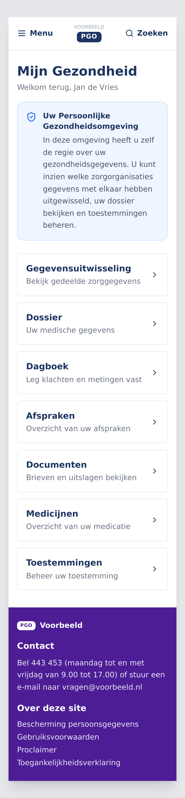
De transparantiefunctie is in dit ontwerp geplaatst binnen een bestaande persoonlijke gezondheidsomgeving. Hiermee wordt onderzocht hoe inzicht in gegevensuitwisselingen in de context van een bestaande dienstverlening kan worden aangeboden, in plaats van uitsluitend als afzonderlijke applicatie.
Dit sluit aan bij de behoefte van gebruikers om transparantie te vinden op het moment en de plek waar deze relevant is, zonder daarvoor eerst een afzonderlijke transparantievoorziening te hoeven kennen of opzoeken.
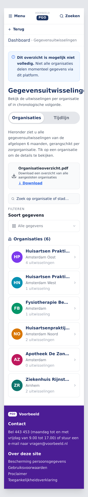
Het organisatieoverzicht vormt een van de belangrijkste ingangen tot de informatie. Gebruikers kunnen zien met welke organisaties gegevens zijn uitgewisseld en vervolgens doorklikken om de gegevensuitwisselingen van een specifieke organisatie te bekijken.
Bovenaan wordt expliciet aangegeven dat het overzicht mogelijk niet volledig is. Hiermee wordt voorkomen dat de interface onbedoeld de indruk wekt dat alle organisaties en gegevensuitwisselingen in het overzicht zijn opgenomen.
Gebruikers kunnen daarnaast schakelen tussen het organisatieoverzicht en een chronologische tijdlijn. Hiermee worden verschillende manieren van zoeken en oriënteren ondersteund.
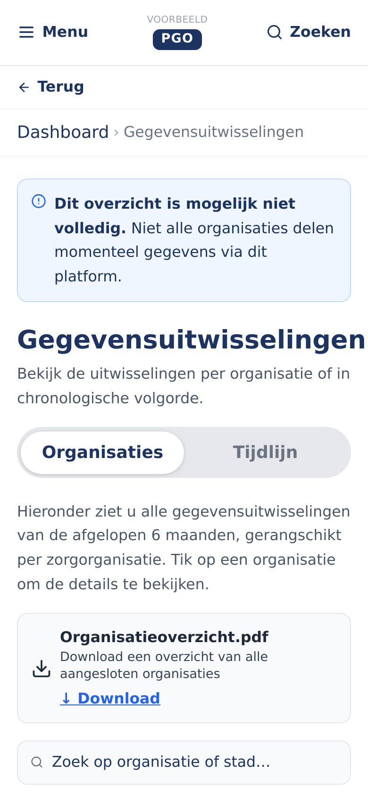
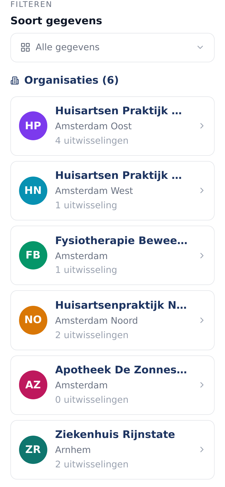
De detailweergaven laten zien hoe informatie over organisaties en gegevensuitwisselingen wordt opgebouwd. Organisaties fungeren hierbij als herkenningspunt van waaruit de gebruiker verder kan verdiepen.
Gebruikers kunnen het overzicht filteren op het soort gegevens, zoals labuitslagen, recepten, medicatie of ontslagbrieven.
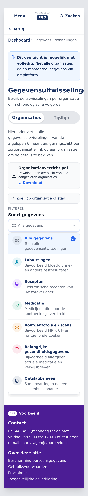
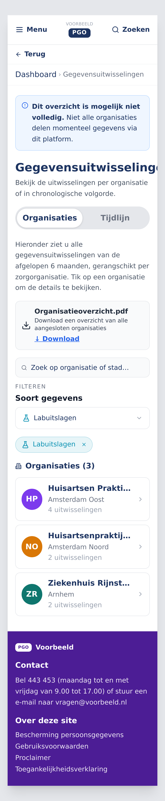
Na het toepassen van een filter worden alleen de organisaties getoond waarvoor relevante gegevensuitwisselingen beschikbaar zijn.
Naast filteren kan de gebruiker rechtstreeks zoeken naar een organisatie.
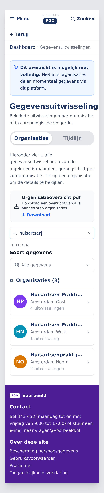
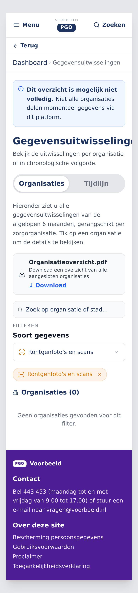
Wanneer een zoekopdracht of filter geen resultaten oplevert, wordt dit expliciet weergegeven. Hiermee ondersteunt het ontwerp verschillende zoekstrategieën en hoeft de gebruiker niet één vaste route door de informatie te volgen.
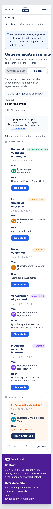
Naast het organisatieoverzicht kan de gebruiker kiezen voor een chronologische weergave. De tijdlijn maakt zichtbaar wanneer gegevens zijn uitgewisseld, tussen welke organisaties dit gebeurde en om welk type gebeurtenis het gaat.
Hiermee kan de gebruiker gebeurtenissen vanuit een ander perspectief bekijken dan in het organisatieoverzicht. Dit is bijvoorbeeld relevant wanneer iemand vooral wil begrijpen wat er rondom een bepaalde periode is gebeurd.
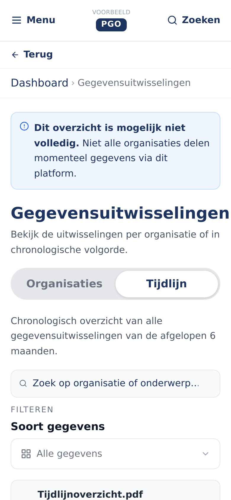
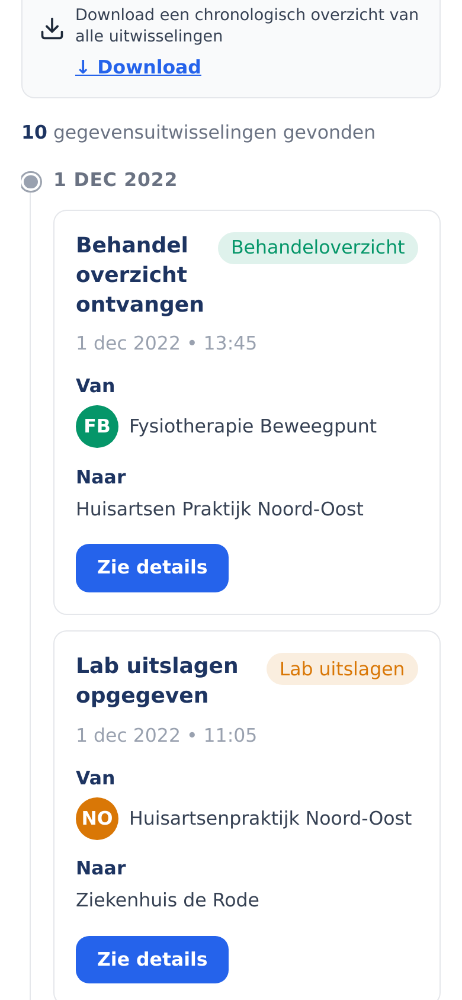
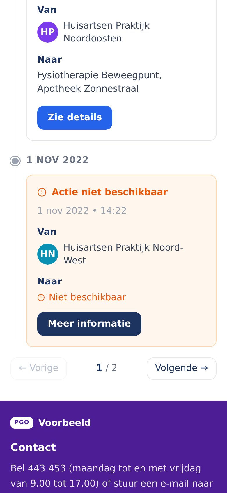
De detailweergaven laten zien hoe afzonderlijke gebeurtenissen binnen de tijdlijn worden gepresenteerd en hoe de gebruiker vanuit een gebeurtenis verder kan verdiepen.
Ook binnen de tijdlijn kunnen gebruikers zoeken en filteren.
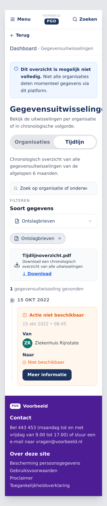
Zo kunnen gebruikers vanuit verschillende mentale modellen bij dezelfde informatie komen: via een organisatie, via een chronologisch overzicht of via zoeken en filteren.
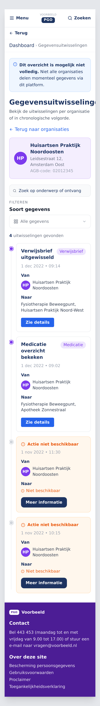
Vanuit het organisatieoverzicht kan worden ingezoomd op één specifieke organisatie. De gebruiker ziet vervolgens de gegevensuitwisselingen waarbij deze organisatie betrokken is.
De organisatie fungeert hierbij als herkenningspunt. Vanuit deze herkenbare context kan de gebruiker verder onderzoeken welke gegevens zijn uitgewisseld, wanneer dit gebeurde en met welke andere organisaties.
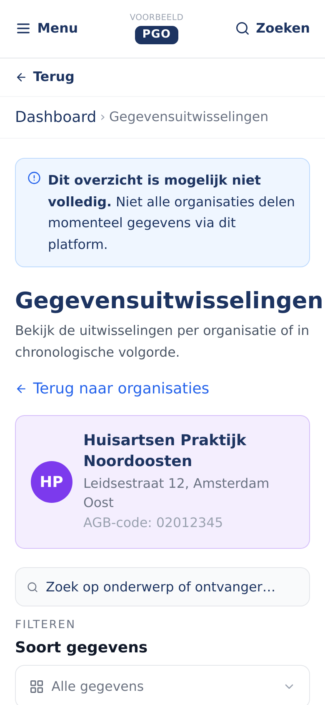
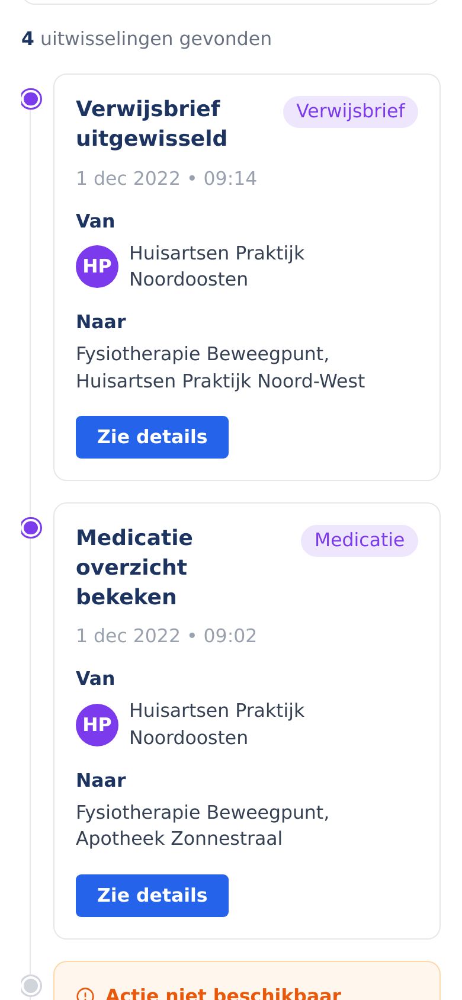
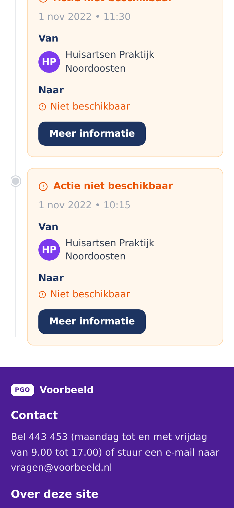
De gebruiker krijgt hiermee eerst een overzicht van de organisatie en kan vervolgens per gebeurtenis verder verdiepen.
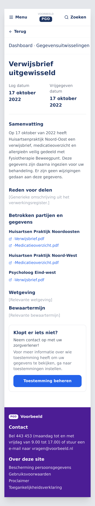
Op detailniveau wordt meer context gegeven over een specifieke gegevensuitwisseling. De gebruiker ziet onder andere wanneer de uitwisseling heeft plaatsgevonden, welke organisaties betrokken waren, welke gegevens zijn gedeeld en wat de reden voor de uitwisseling was.
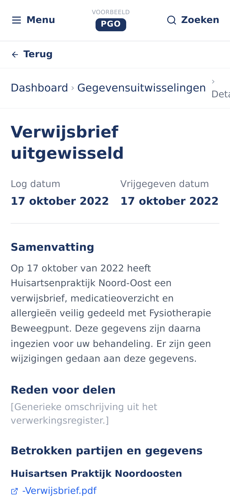
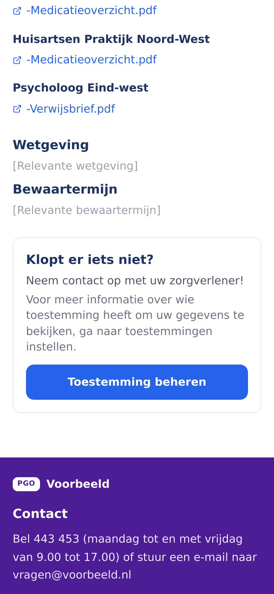
Hiermee wordt de gebruiker stapsgewijs van herkenning naar meer gedetailleerde uitleg geleid. Wanneer een gebruiker denkt dat iets niet klopt, wordt daarnaast handelingsperspectief aangeboden door te verwijzen naar de verantwoordelijke organisatie of een relevante vervolgstap.
Het final design brengt de belangrijkste inzichten uit het gebruikersonderzoek samen:
Bied transparantie in context
Bied inzicht in gegevensuitwisselingen waar mogelijk binnen bestaande systemen en gebruikersreizen, zodat de gebruiker niet eerst een afzonderlijke transparantievoorziening hoeft te vinden.
Begin met herkenning en bouw daarna verdieping op
Organisaties, gebeurtenissen en datums bieden herkenningspunten. Vanuit deze context kan de gebruiker verder verdiepen in wat er is gebeurd en waarom.
Ondersteun verschillende mentale modellen
Bied meerdere routes naar dezelfde informatie, bijvoorbeeld via organisaties, een chronologische tijdlijn, zoeken en filteren.
Wees transparant over de grenzen van het overzicht
Maak duidelijk wanneer informatie mogelijk niet volledig is en leg uit waarom bepaalde informatie ontbreekt. Voorkom dat een gedeeltelijk overzicht de suggestie van volledigheid wekt.
Koppel transparantie aan handelingsperspectief
Wanneer iets onduidelijk is of mogelijk niet klopt, moet de gebruiker kunnen begrijpen wat die vervolgens kan doen en bij welke organisatie die terechtkan.
Toon informatie op het juiste detailniveau
Begin met een begrijpelijk overzicht en bied vervolgens verdieping voor gebruikers die meer willen weten. Zo blijft de informatie toegankelijk zonder relevante details weg te laten.
Het final design verschuift de focus van het uitsluitend tonen van gegevensuitwisselingen naar het ondersteunen van de gebruiker bij het herkennen, begrijpen en controleren van wat er met gegevens gebeurt.
Daarbij is transparantie niet alleen een kwestie van zoveel mogelijk informatie beschikbaar stellen. De informatie moet ook begrijpelijk, betrouwbaar en in de juiste context worden aangeboden. Wanneer informatie ontbreekt, moet dit worden verklaard en waar nodig worden gekoppeld aan een vervolgstap.
Het ontwerp vormt daarmee een basis voor een transparantievoorziening waarin herkenning, context, verklaring en handelingsperspectief samen bijdragen aan meer begrip en vertrouwen.
De de extensie lezen voor de standaard logboek dataverwerkingen is bedoeld om via een TransparantieApp inzichttelijk te kunnen maken welke (persoons)gegevens verwerkt (gelezen, toegevoegd of gewijzigd) zijn door welke (overheids)organisatie(s) en waarom.
Degene die inzicht wil hebben in deze verwerkingen kan daarvoor in hoofdlijnen op twee manieren de vraag 'insteken':
a) Hoe is dit besluit tot stand gekomen?
b) Wie heeft er - los van welk besluit ook - eigenlijk inzicht in of gebruik gemaakt van mijn persoonsgegevens?
Onderstaand worden beide Usecases toegelicht.
Vanuit de juridische kaders wordt duidelijk dat waar een keten van overheidsorganisaties betrokken is bij de totstandkoming van een besluit, elk van deze organisaties beschouwd wordt als verwerkingsverantwoordelijke in de zin van de AVG. Het is dus niet zo dat de organisaties die niet het proces hebben geinitieerd (maar informatie geleverd hebben aan de initiator) verwerker zijn in de keten die geinitieerd is door een verwerkingsverantwoordelijke.
Gevolg hiervan is dat een betrokkene (bedrijf/inwoner) bij elk van de organisaties afzonderlijk terecht moet kunnen om te vragen wat er met diens persoonsgegevens is gebeurd.
Wanneer een bedrijf of inwoner (betrokkene) geconfronteerd wordt met een besluit van een overheidsorganisatie (uitvoeringsorganisaties expliciet inbegrepen), ontstaat geregeld de vraag hoe men tot dat besluit gekomen is. Er is een expliciete 'trigger' die deze vraag doet rijzen (het document waarin het besluit wordt meegedeeld). Vaak zal de vraag om inzicht in de totstandkoming van het besluit ingegeven worden door onbegrip over de uitkomst of omdat de uitkomst de betrokkene niet welgevallig is. Gebruikersonderzoek laat zien dat dit patroon het beste aansluit op de verwachtingen van gebruikers van een te realiseren TransparantieApp.
De totstandkoming van het besluit is over het algemeen gebaseerd op meerdere elementen:
- de geregistreerde gegevens over de persoon of diens eigendom/gebruik van zaken (bijvoorbeeld: de eigendom van een woning op 1 januari van enig jaar)
- wet- en regelgeving (bijvoorbeeld de Gemeentewet en lokale verordeningen)
- de grondslag(en) (bijvoorbeeld de woningwaarde volgens de wet WOZ, waarbij vervolgens ook weer geregistreerde gegevens van belang zijn, zoals het bouwjaar, de staat van onderhoud, etc. van de betreffende woning)
- de eventuele berekeningen/formules (bijvoorbeeld WOZ-waarde/1000*tarief)
Door de duidelijke trigger (bijvoorbeeld de gemeentelijke belastingaanslag) is het duidelijk waar de burger moet zijn met diens vraag (de betreffende gemeente). Wel kan het zijn dat er vanuit dat startpunt nog andere organisaties geraadpleegd moeten worden. Vanuit de LDV-logging-standaard wordt deze keten vastgelegd en is deze dus ook te volgen.
De logging-standaard voorziet alleen in het vastleggen van de gebruikte gegevens, niet zozeer in de (uitleg van de) achterliggende wetgeving en rekenregels. Ook de totstandkoming van de grondslag (in het voorbeeld de WOZ-waarde) zal geregeld geen onderdeel uitmaken van dezelfde trace als de totstandkoming van het besluit. Daarom is het advies om in de standaard voor de logging de optie op te nemen van verwijzingen naar of andere traces of een URL waarachter een webpagina of een document verdere uitleg geeft over de totstandkoming van de grondslag (bijvoorbeeld het taxatieverslag). Wel is er voorzien in unieke identificatiecodes voor verwerkingen, maar dat gaat om statische data die eventueel wel bruikbaar is voor uitleg van de wet- en regelgeving, maar niet geschikt is voor de verstrekking van gepersonaliseerde data die onder de grondslagen ligt. Gezien de ontwikkelingen die gaande zijn rond 'rules as code' bevelen we aan om de mogelijkheid te onderzoeken om de TransparantieApp uit te breiden met inzicht in de toegepaste rekenregels (zie aanbevelingen vanuit gebruikersonderzoek).
Een andere gebruikspatroon is de meer generieke vraag van een betrokkene: wie heeft er aan mijn gegevens gezeten. Bestaande apps en websites maken dit tot op zekere hoogte al transparant, maar net niet op het detailniveau waarop dat zou kunnen met de TransparantieApp.
Zo is in de App "MijnGegevens" wel te zien met welke organisaties BRP-gegevens gedeeld worden, maar wordt niet duidelijk om welke gegevens-elementen het dan exact gaat en welke gegevens-wijzigingen er worden gedeeld met welke organisaties. Bovendien is alleen voor zogenaamde 'identiteitsgegevens' zichtbaar dat deze gedeeld zijn, maar niet voor bijvoorbeeld WOZ-gegevens of diploma's.
Op de website "Gegevens bij besluiten" wordt per besluit in zijn algemeenheid wel aangegeven welke gegevens-elementen van welke registraties worden gebruikt, maar kan een persoon niet 'doorklikken' om te zien wanneer welke gegevens-waarden dan daadwerkelijk zijn gecommuniceerd. Bovendien is niet te zien welke besluiten er daadwerkelijk over iemand genomen zijn, het is een verzameling van alle (?) potentiele besluiten die overheden kunnen nemen. Het is, kortom, niet gepersonaliseerd.
De TransparantieApp combineert in deze usecase in feite die beide invalshoeken en kan dus gepersonaliseerde informatie laten zien over gedeelde gegevens tussen overheden, pensioenfondsen e.d.: "welke gegevens zijn door wie gebruikt om wat te doen"
Omdat er meer dan alleen (semi-)overheidsorganisaties gebruik maken van het BSN en daaraan gerelateerde gegevens, is het advies de reikwijdte van de logging-standaard te vergroten tot de autorisatielijst BSN gerechtigden (ALB).
Allerlei overheden (en gerelateerde partijen) verwerken gegevens die zij delen met anderen of betrekken van anderen. Elke organisatie is daarbij zelf verantwoordelijk voor de logging van wat er gebeurt met de data en met wie zij die data gedeeld hebben. Zie de standaard logboek dataverwerkingen.
De logging over van verwerkingen rondom een besluit van een overheid, ligt dus potentieel verspreid over meerdere overheden vast.
Door de federatieve werkwijze van de logging, moet ook een opvraging van de logs bij alle overheden afzonderlijk gebeuren. Een TransparantieApp moet dit 'onder water' automatisch doen en niet aan de gebruiker overlaten om daarin 'de weg te vinden'. Er moet daardoor in de applicatie-architectuur een oplossing gevonden worden om 1) alle (overheids)organisaties die potentieel gegevens gelogd hebben te identificeren en b) al deze logboeken (potentieel meerdere per organisatie) te bevragen, met een grote kans dat de meerderheid van de logboeken geen data heeft aangaande de betreffende persoon (of object).
Omdat bij tests gebleken is, dat een dergelijke wijze van logs lezen niet efficient en performant uitvoerbaar is, is een applicatie-architectuur ontworpen met een centraal traceregister waarin - gepseudonimiseerd! - vastligt welke organisaties log-informatie over welke persoon hebben. Op basis van dat register kan de TransparantieApp snel en efficient de betreffende organisaties bevragen.
Voor de gedetailleerde uitwerking van de applicatie-architectuur zie Applicatie architectuur.
In eerste instantie zou men kunnen denken dat ook het lezen van de log via de TransparantieApp gelogd moet (kan) worden. Echter, voor de gebruiker van de App voegt het niets toe om te kunnen zien dat diegene zelf het logboek heeft geraadpleegd. Het zou wel informatief zijn voor de gebruiker om te zien dat een ander diens logs heeft geraadpleegd. Dat is op zich ook geen probleem, tenzij op Level 3 gelogd wordt. Immers, dan zou vastgelegd worden dat iemand een bepaalde combinatie van traceids heeft geraadpleegd. Daarmee ligt de relatie tussen traceids van een persoon vast. Aangezien die traceids in de traceindex vastliggen in combinatie met de bijbehorende logboeken (en dus organisaties), leidt dit tot een potentieel inzicht (en eventueel identificatie van een persoon) waar in de traceindex nu juist maatregelen genomen zijn om dat te voorkomen.
Dit project had twee nauw verweven doelen: het uitbreiden van de standaard Logboek Dataverwerkingen met een extensie voor het lezen van logging, en het valideren van die extensie via een werkend prototype — de TransparantieApp — in een simulatieomgeving. Dit hoofdstuk brengt de bevindingen uit het gebruikersonderzoek, de architectuur en de praktijkbeproeving samen, en beantwoordt de vraag of, en onder welke voorwaarden, deze aanpak burgers daadwerkelijk transparantie biedt zonder ze te overvragen.
De belangrijkste bevinding uit het gebruikersonderzoek is niet UX-technisch van aard, maar fundamenteel voor de opzet van de app zelf: ontbrekende of niet-beschikbare informatie is de enige bevinding die als kritiek is geclassificeerd. Wanneer het systeem meldingen toont zoals "actie niet beschikbaar" of gegevens simpelweg ontbreken zonder toelichting, kan niet alleen onduidelijkheid ontstaan, maar mogelijk ook wantrouwen: burgers vermoeden dan wellicht dat informatie bewust wordt achtergehouden.
Deze bevinding leidt tot een conclusie die verder gaat dan een ontwerpaanpassing. Een app die zonder tussenkomst van een mens (volledige automatisering, zie ook de vier toepassingscategorieën in "Standaard voor lezen logging") gegevens ophaalt en toont, is daarom pas aan te bevelen wanneer alle organisaties in de keten daadwerkelijk zijn aangesloten. Zolang dat niet zo is, kan elk gat in de keten zich vertalen in een gat in het vertrouwen van de burger — een gat dat met goede UX (heldere statussen, uitleg, handelingsperspectief) waarschijnlijk wel te verzachten is, maar niet op te lossen. Zolang niet iedere organisatie is aangesloten, blijft menselijke tussenkomst — bijvoorbeeld een medewerker die ontbrekende schakels handmatig aanvult of duidt — dan ook mogelijk wenselijk. Volledige automatisering is in dat licht een stip op de horizon, die pas aan te bevelen is wanneer de dekking van de keten dat rechtvaardigt.
Los van dit voorbehoud laat het onderzoek zien dat burgers geen behoefte hebben aan meer data, maar aan begrijpelijke gebeurtenissen. Drie principes komen telkens terug en vormen de kern van het antwoord op de onderzoeksvraag:
- Van 'log' naar 'gebeurtenis': technische logregels worden vertaald naar voor burgers herkenbare gebeurtenissen (bijvoorbeeld "WOZ-waarde vastgesteld" in plaats van "Dataverwerking verzoek 0x234"), aansluitend bij patronen die burgers al kennen van MijnOverheid.
- Progressive disclosure: informatie wordt gelaagd aangeboden, zodat de burger zelf de detaildiepte kiest in plaats van in één keer geconfronteerd te worden met alle technische details.
- Inclusiviteit door eenvoud: het ontwerp voor de meest kwetsbare gebruiker (heldere taal, B1-niveau, WCAG 2.2 Level AA) blijkt in de praktijk ook de meest effectieve standaard voor alle andere gebruikersgroepen.
Deze drie principes verklaren waarom het prototype, ondanks de kritieke bevinding over ontbrekende informatie, wél aantoont dat transparantie op een gebruiksvriendelijke manier vormgegeven kan worden.
De praktijkbeproeving toont dat de extensie lezen werkt in een gesimuleerde meerorganisatie-omgeving. Belangrijker nog: de lessen die daarbij zijn opgehaald — zoekcriteria in de request body in plaats van de URL, uitbreidbare attributen via namespaces in plaats van een vaste lijst, en het verbergen van interne datamodellen achter leesbare formaten — zijn geen aanbevelingen voor de toekomst gebleven, maar al verwerkt in de werkversie van de standaard zelf (logius-standaarden.github.io/logboek-extensie-lezen). Voor de technische onderbouwing per les verwijzen we naar het hoofdstuk Praktijkbeproeving en naar de standaard zelf.
Zo is de aanbeveling "alleen een POST-operatie te gebruiken voor het bevragen van de lezen API" al toegepast.
Wat nog wél open staat, is te volgen via de openstaande pull requests. De verwerking gaat bij afsluiting van dit project snel, dus mogelijk zijn op moment van lezen nog meer aanbevelingen en open punten verwerkt.
De gepubliceerde specificatie is op het moment van schrijven nog een werkversie, de stap naar formele vastlegging is echter wel een logisch vervolg. De verwachting is dat op korte termijn een publieke consultatie zou kunnen starten. Adoptie en praktisch gebruik in productie van de resultaten van dit onderzoek liggen in de nabije toekomst. De verwachting is dat dit binnen de beheeropdracht van Logius voor de standaard gerealiseerd kan worden.
De reflectie op de architectuur versterkt de conclusie over ketenvolledigheid vanuit een ander perspectief: bij circa 1.600 overheidsorganisaties is het onrealistisch te veronderstellen dat aansluiting op de standaard van de ene op de andere dag compleet is, en vraagt het gekozen gedecentraliseerde model om zorgvuldige toegangscontrole per organisatie in plaats van één centrale voorziening. Ook het beleidsjuridisch kader benadrukt dat elke organisatie zelf verantwoordelijk blijft voor de inrichting van haar eigen logging en voor de afweging welke informatie proactief inzichtelijk wordt gemaakt. Doorontwikkeling van de TransparantieApp vraagt daarom om een groeipad: begin met de situaties waarin de keten wél compleet is, of waar menselijke tussenkomst de ontbrekende schakels kan opvangen, en breid volledige automatisering pas uit naarmate meer organisaties daadwerkelijk aansluiten.
Het prototype TransparantieApp toont aan dat transparantie over overheidsbesluiten begrijpelijk, gelaagd en inclusief kan worden aangeboden, en dat de extensie lezen op het Logboek Dataverwerkingen daarvoor een werkbare technische basis biedt — al is die basis, als werkversie van de standaard, zelf nog niet afgerond. Het onderzoek wijst er echter op dat een belangrijke bedreiging voor vertrouwen mogelijk niet in de interface zit, maar in onvolledige of niet-aangesloten organisaties binnen de keten. Volledig geautomatiseerde transparantie zonder menselijke tussenkomst is daarom pas aan te bevelen wanneer de keten dat aankan; tot die tijd blijft een combinatie van automatisering waar mogelijk en menselijke tussenkomst waar nodig vermoedelijk de meest betrouwbare weg naar herstel van vertrouwen tussen burger en overheid. De concrete vervolgstappen hiervoor staan uitgewerkt in de sectie Aanbevelingen.


![Sequence diagram: aanmelden van een Trace]()
![Sequence diagram: Opvragen van TraceId's]()